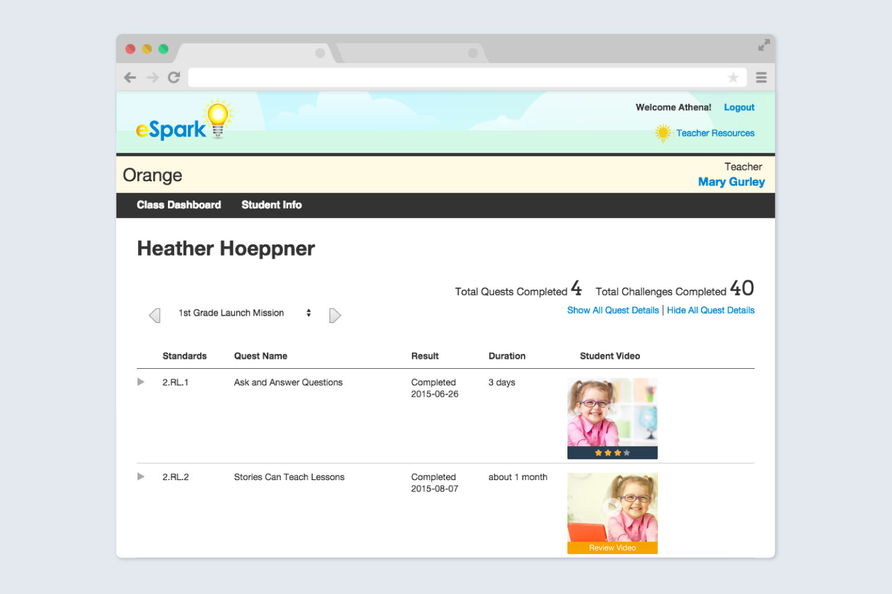

Pharmacy Solution
Lumere (f.k.a. Procured Health)
Research, UX, UI, Testing, QA
October 2017
Web
Brief
Design a new tool that optimizes complex Pharmacy department spend and utilization within scattered hospital systems.
Context and problem
Formulary evaluation is a tedious process, sometimes taking six months to just reach a decision on which drugs to remove from or add to the pharmacy. Healthcare leaders have to consider cost-savings, efficacy, and variation of which pharmaceuticals are preferred by the doctors at their various hospitals.
This process is slowed down and further complicated by purchasing and utilization data living in different tools, usage data being received in disparate formats, and infinite trial information and literature to sift through to become acquainted with a trustworthy option.
How might we bring together vital and accurate information to guide decision makers for optimal savings and patient outcomes?

Highlight Savings Opportunities
‣ Where am I spending too much?
‣ Where has my spend grown over the fiscal year?
‣ Where is there a lot of variation in utilization within my organization?
Aggregate Various Data Into Comprehensive Data Visuals
‣ What story does my purchasing data tell me when I match it with utilization data?
‣ How much drug cost disparity exists in my organization after units are normalized across clinically equivalent products?

Serve Relevant Evidence with Analysis
‣ How do I begin sifting through the mountain of research and reports on clinical trials?
‣ How do I determine which drugs are comparable and make the right clinical recommendation to enact?
Process
Over the span of 4 months, a small and dedicated team of one Project Manager, one Software Engineer, and myself delved into this opportunity space.
Personas determined from interviews conducted with kindergarten through 6th grade teachers and students.

The feedback feature needed to ensure increased likelihood of a closed loop flow.
Closing the Feedback Loop
-
Teachers can easily find newly submitted videos through direct links in their weekly digest emails.
-
A video viewer pops up on the students individual drill down page; teachers can watch and rate videos will all necessary context right in their browser.
-

After sending feedback to his/her student, the teacher's dashboard updates to display the rating given.
-
When a student logs into the eSpark app, a notification blinks in the corner alerting him/her to new teacher feedback.
-

In the student mission dashboard, students can see which video, and from which quest, the feedback pertains to.
-
Students can see or hear their teacher's feedback in their previous quest popover while also reviewing their video.

The Results
In the first 7 months after launch, over 32,000 student videos were graded and given unique feedback. We measured the star ratings students earned right after launch in November as well as ratings earned five months post-launch, comparing similar sample sizes.
Quality of student projects showed improvement as teachers demonstrated that they were engaging with students' efforts. At the end of the observation cycle, there was a 10% increase in percentage of 4 star ratings earned by students in addition a noticeable rightward lean.